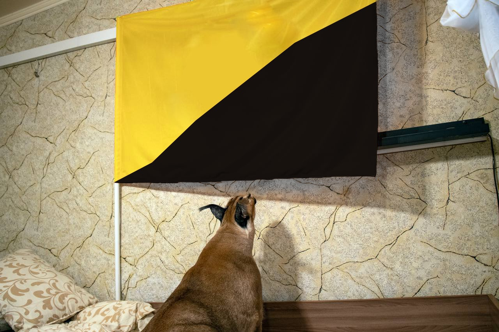

Условия обычной квартиры для проживания активной кошки не подойдут. Оптимальный вариант - выделить ему отдельную комнату. Там стоит оборудовать специальные лесенки со ступеньками или полочки на стенах, чтобы животному было где упражняться в прыжках. Для прогулок каракала на свежем воздухе в теплое время года также необходимо построить вольер. Площадь огороженной территории должна быть не менее 20 квадратных метров, высота ограждения - 3 метра. Над частью вольера желательно устроить крышу, чтобы каракал мог прятаться под ней от непогоды. Оставлять питомца без присмотра в гостиной, кухне или спальне нельзя. Он моментально устроит там беспорядок, погрызёт мебель и провода, что может быть опасным для его жизни. Если самец каракала был куплен не для разведения, лучше кастрировать животное в возрасте 8-9 месяцев. Такая процедура позволит избежать зловонных меток, которые оставляет взрослый кот. Большинство заводчиков каракалов приучают котят к лотку прежде, чем отдавать хозяевам. Однако лоток придется убирать оперативно, так как каракал не закапывает экскременты, а оставляет их на поверхности. Наполнять туалет можно древесными гранулами или даже обычной стружкой.
Прежде всего, надо ответственно подойти к выбору питомника. Он должен быть официально зарегистрирован, чтобы при покупке вам были выданы все необходимые документы. Приобретение у перекупщиков или браконьеров создаст проблемы и владельцу, и питомцу. Перед покупкой посетите питомник и посмотрите, в каких условиях содержатся звери, получают ли регулярное питание и возможность выгула. Домашний питомник в этом отношении лучше вольерного, потому что котенок с рождения находится в контакте с человеком, а поэтому испытывает потребность в нём и, с другой стороны, легче переживёт смену обстановки. Надёжность заводчика не отменяет процедуры осмотра. Осмотрите котят тщательно. Если котенок здоров, у него блестящая шерсть, чистые ушки, глаза и нос. Понаблюдайте за тем, как котята играют, как реагируют на человека. Подвижный, дружелюбный каракал, скорее всего, окажется правильным выбором. Стоимость котенка в нашей стране 8500-12000 долларов. Кошка обычно стоит дороже, чем котик. Высокая цена объясняется как сложностью выращивания, так и тем, что разведение каракалов в нашей стране пока не приобрело популярность.